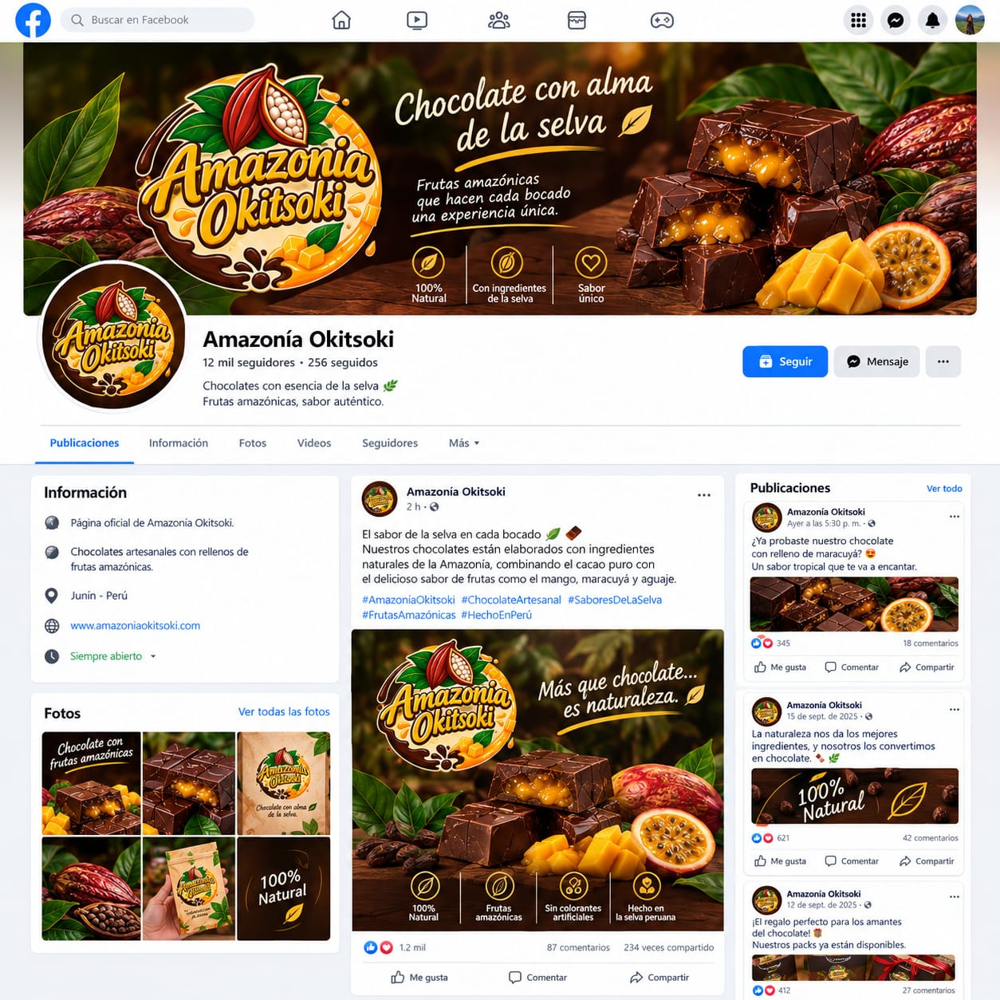
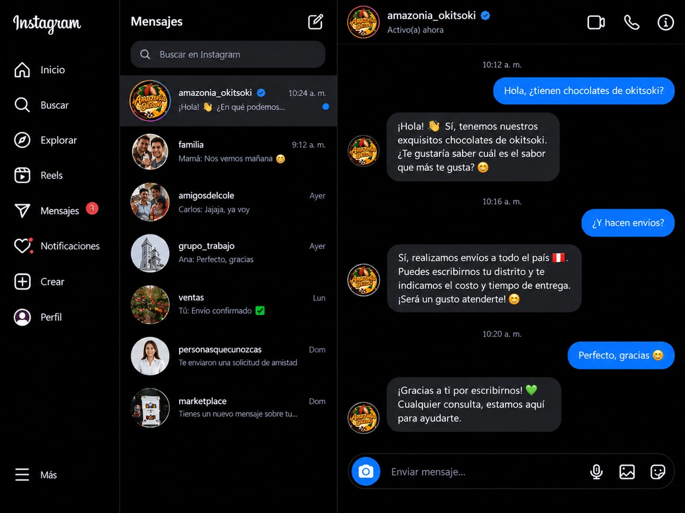
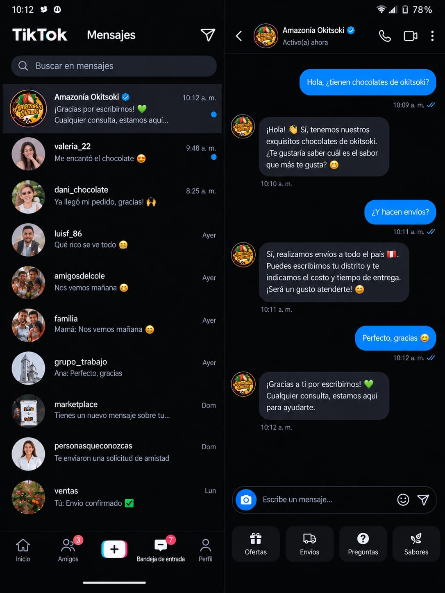
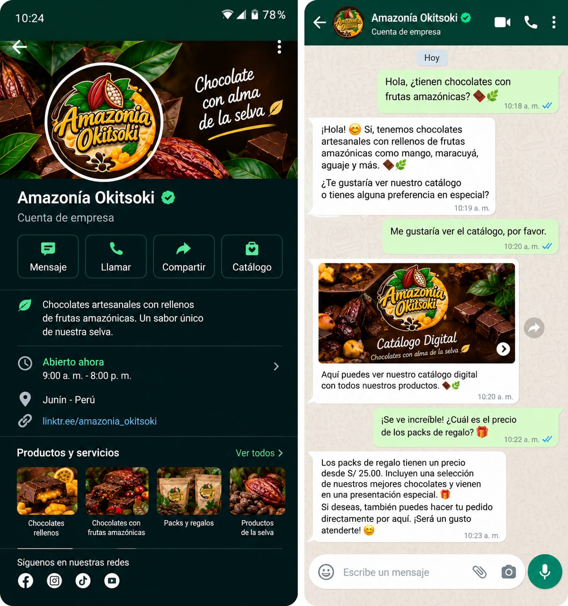

Tono de Voz Institucional
La empresa se comunica con un lenguaje cercano, amigable y sencillo, buscando generar confianza directa con sus clientes, turistas y la comunidad de Satipo.
Mensaje y Eslogan Oficial
Mensaje principal: "El sabor del mejor cacao de nuestra selva en cada chocolate."
Eslogan: "Amazonía Okitsoki, el verdadero grano de cacao artesanal de Satipo."
Presencia en Medios Digitales y Redes
Plataformas activas para difusión de productos, historias y atención al cliente.

Página oficial de productos y servicios con publicaciones interactivas y atención de pedidos directos.

Galería visual de chocolates artesanales, reels de elaboración e historias destacadas de la selva.

TikTok
Videos dinámicos mostrando el proceso del cacao nativo de Satipo y la experiencia de sabor.

WhatsApp Business
Canal de atención directa y catálogo digital para ventas personalizadas y entrega rápida.